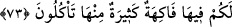

karşılığı ise “miras” gibi olmaktadır.
Kâşifî şöyle demiştir: Cezâyı mîras lafzıyla zikretti ki hâlistir ve hak edilerek elde
edilir.
İbn Abbas (r.a.)’ın bildirdiğine göre, Allah Teâlâ herkes için hem cennet hem
cehennem yaratmıştır. Kâfir, Müslüman için yaratılan cehenneme, Müslüman da kâfir
için yaratılan cennete vâris olacaktır.
Bazıları der ki: Allah Teâlâ cennet mükâfâtını amellerle beraber zikretmiştir. Ancak
mârifet, vuslat, muhabbet ve müşâhedeyi zâtını ve cemâlini görmeyi illet ve sebepten
arındırmıştır. Çünkü bu müşâhede Allah’ın ârif ve sâdık kullarından dilediğini mirasçı
kıldığı ezelî ve özel bir durumdur. Cennet ve ameller yaratılmıştır. Sonuçta yaratılmış
olan, yaratılmış olan ameller sebebiyle cennetliklere verilecektir. Mevlâ’nın cemâlini
görmek ise hiçbir şeyin kendisine denk olamayacağı Allah Teâlâ’nın, yine kendisine
hiçbir şeyin denk olamayacağı lutuf ve ihsanıdır.
73. Orada sizin için bol bol meyveler vardır, onlardan yersiniz, denilir.
“Orada” cennette “sizin için” yeme içmenin dışında “bol bol” çeşit çeşit “meyveler
vardır. Onlardan” bazılarından “yersiniz.”
Meyveler insanların çok arzuladıkları en leziz şeylerden, insan tabiatına ve bedenine
en uygun gıdâlardandır. Bunun için Allah Teâlâ meyveleri ayrıca özel olarak
zikretmiştir. Meyveler çok fazla olduğundan hangisine sıra gelirse ondan bir miktar
yerler. Diğer meyveler ise hep ağaçların dallarında bulunurlar. Cennette ağaçlar bir an
bile meyvesiz kalmazlar. Ağaçlar meyvelerle süslenmiş olup hep dolu doludurlar.
Hadis-i şerifte haber verildiğine göre, “Cennette bir insan, cennet meyvesinden
alınca onun yerine hemen onun iki misli bitiverir.”[195]
Âyet şuna delâlet etmektedir: Cennet ehlinin yediği her şey; canlarının çektiği kuş
etleri, meyveler, çerezler… hepsi zevk ve keyf içindir. Yani orada bir azık ve gıdâya
ihtiyaç yoktur. Çünkü alınan gıdâların çözülerek dışa atılması söz konusu değildir. Belki
de Kur’an’da cennetteki yiyecek, içecek ve giyeceklerden detaylı olarak bahsedilmesi,
bunların tekrar tekrar gündeme getirilmesi, -ki bunlar cennetteki diğer nimetlere göre
hakir ve basit şeylerdir- genel olarak bu şeylerin insanların dünyada elde etmek için
sıkıntı ve darlık çektikleri hususlar olmasındandır. Dolayısıyla burada insanlar bu
nimetlerin elde edilebilme sebeplerine tahrîk ve teşvîk edilmektedir.
İlk bakışta fâsık kişi, kıyâmet gününde korkup üzülüyor olması sebebiyle bu hükmün
dışında tutulmasında bir mahzur yok gibi görülse de Allah’a ve Allah’ın âyetlerine
inanan namaz ehli fâsık bir insan, âyette haber verilen cennet vaadine dâhildir.
Hulâsa bu âyet, kâmil müminler hakkındadır. Zîrâ bunlar, bütün varlık ve benlikleriyle